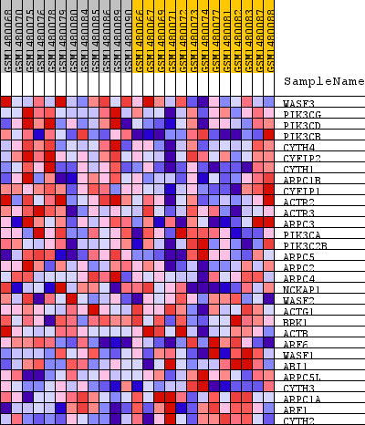
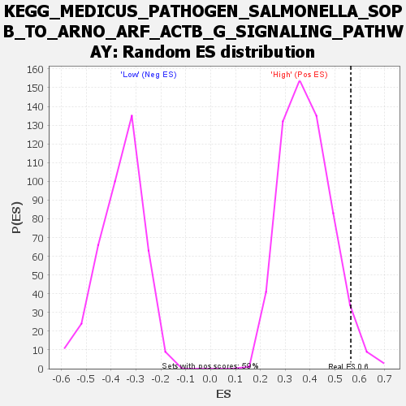

Profile of the Running ES Score & Positions of GeneSet Members on the Rank Ordered List
| Dataset | WG6v3.CYGB.cls#High_versus_Low.CYGB.cls#High_versus_Low_repos |
| Phenotype | CYGB.cls#High_versus_Low_repos |
| Upregulated in class | High |
| GeneSet | KEGG_MEDICUS_PATHOGEN_SALMONELLA_SOPB_TO_ARNO_ARF_ACTB_G_SIGNALING_PATHWAY |
| Enrichment Score (ES) | 0.56355333 |
| Normalized Enrichment Score (NES) | 1.4657168 |
| Nominal p-value | 0.03885135 |
| FDR q-value | 0.4141042 |
| FWER p-Value | 1.0 |
| SYMBOL | TITLE | RANK IN GENE LIST | RANK METRIC SCORE | RUNNING ES | CORE ENRICHMENT | |
|---|---|---|---|---|---|---|
| 1 | WASF3 | WASF3 | 673 | 0.134 | 0.0617 | Yes |
| 2 | PIK3CG | PIK3CG | 753 | 0.125 | 0.1478 | Yes |
| 3 | PIK3CD | PIK3CD | 789 | 0.122 | 0.2339 | Yes |
| 4 | PIK3CB | PIK3CB | 790 | 0.122 | 0.3216 | Yes |
| 5 | CYTH4 | CYTH4 | 956 | 0.107 | 0.3903 | Yes |
| 6 | CYFIP2 | CYFIP2 | 1450 | 0.078 | 0.4212 | Yes |
| 7 | CYTH1 | CYTH1 | 1661 | 0.069 | 0.4604 | Yes |
| 8 | ARPC1B | ARPC1B | 2503 | 0.046 | 0.4504 | Yes |
| 9 | CYFIP1 | CYFIP1 | 2527 | 0.046 | 0.4822 | Yes |
| 10 | ACTR2 | ACTR2 | 2710 | 0.042 | 0.5029 | Yes |
| 11 | ACTR3 | ACTR3 | 3163 | 0.034 | 0.5039 | Yes |
| 12 | ARPC3 | ARPC3 | 3278 | 0.032 | 0.5211 | Yes |
| 13 | PIK3CA | PIK3CA | 3279 | 0.032 | 0.5441 | Yes |
| 14 | PIK3C2B | PIK3C2B | 3337 | 0.031 | 0.5636 | Yes |
| 15 | ARPC5 | ARPC5 | 4248 | 0.021 | 0.5319 | No |
| 16 | ARPC2 | ARPC2 | 4432 | 0.019 | 0.5365 | No |
| 17 | ARPC4 | ARPC4 | 4516 | 0.019 | 0.5458 | No |
| 18 | NCKAP1 | NCKAP1 | 4614 | 0.018 | 0.5538 | No |
| 19 | WASF2 | WASF2 | 5348 | 0.013 | 0.5252 | No |
| 20 | ACTG1 | ACTG1 | 6283 | 0.008 | 0.4830 | No |
| 21 | BRK1 | BRK1 | 6394 | 0.008 | 0.4830 | No |
| 22 | ACTB | ACTB | 7384 | 0.004 | 0.4347 | No |
| 23 | ARF6 | ARF6 | 12100 | -0.013 | 0.2007 | No |
| 24 | WASF1 | WASF1 | 12455 | -0.014 | 0.1927 | No |
| 25 | ABI1 | ABI1 | 12662 | -0.015 | 0.1931 | No |
| 26 | ARPC5L | ARPC5L | 14853 | -0.030 | 0.1015 | No |
| 27 | CYTH3 | CYTH3 | 15381 | -0.034 | 0.0989 | No |
| 28 | ARPC1A | ARPC1A | 15451 | -0.035 | 0.1204 | No |
| 29 | ARF1 | ARF1 | 15692 | -0.037 | 0.1348 | No |
| 30 | CYTH2 | CYTH2 | 18185 | -0.080 | 0.0638 | No |

